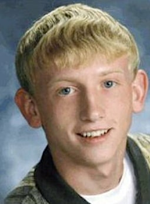

On the afternoon of April 11, 2001, Branson Perry, 20, was cleaning his father's house on West Oak Street in Skidmore, Missouri, so it would be ready when his father came home from the hospital. A friend was helping inside, and two men were fixing his father's car on the street in front of the storage shed. At about 3 p.m. he told the friend he was putting a pair of jumper cables in the shed and would be right back. No one has seen him since. He was reported missing six days later. He left his wallet and belongings behind. No one has been charged, and his remains have never been found.
This is not a case with no witnesses. Three people were at that house when he walked out, and two of them were working in front of the shed he was walking to. Twenty-five years on, the sheriff's office says it is drug related, that it has had a suspect since 2022, and that the case needs either his remains or someone who knows to talk. Two separate tips, in 2009 and 2024, pointed to ground near Quitman, six miles north. If you know what happened, the sheriff's office and his brother are asking you to come forward.
Editorial assessment of public sources, not a finding of fact. Nobody named here has been charged unless this page says so.
A four-part series on this case. Part 4 lays out our hypothesis, which is our judgment, not a finding.
Narration is computer-generated from the sources on this page. Photos are credited in each video.
Details come from the Nodaway County Sheriff's Office's 2019 release, the Missouri State Highway Patrol as quoted in news reports, the St. Joseph News-Press (2009, 2022, 2024), FOX4 (2024), KQ2 (2026), KCTV (2012), the Associated Press (2003-2011), America's Most Wanted (2010, including a letter from his mother), the Charley Project, Solve the Case and Wikipedia. Wikipedia leans on a 2006 true-crime book we could not read; we mark what comes only from it. Sources differ on small details; we note them.
Branson Kayne Perry is born and grows up in Skidmore, Nodaway County (Charley Project; Wikipedia).
Nodaway-Holt High School. He later works for a roofing company and a traveling petting zoo; he is a weightlifter, an outdoorsman and holds a black belt in hapkido (sheriff's release, 2019).
He lives with his father, Bob Perry, in Skidmore; his mother lives about 20 miles away (his mother's letter, AMW).
Four days earlier, he is inadvertently drugged at a neighbor's home, according to a 2006 book cited by Wikipedia. Police have never named the neighbor a suspect, and we do not name him.
His father is in the hospital and due home that Friday. A friend helps him clean. Two men are replacing the alternator on his father's car, parked on the street in front of the storage shed on the lot next to the house (his mother's letter, AMW).
The friend later said she saw him run into the kitchen, take something from a cabinet and run out the back door, and that he would not say what he was doing. After a shower she saw one of the men from the car going through the kitchen cabinets; he told her he was looking for nothing (his mother's letter, AMW). These are her account as relayed by his mother.
From upstairs she hears the porch door, sees him outside and asks where he is going. He says he is putting the jumper cables in the shed and will be right back. The men at the car later said they never saw him (AMW; sheriff's release).
His grandmother comes to check on him and finds the doors open and the radio on. She returns the next day, then starts calling his friends (AMW). Wikipedia, citing the book, says she first came on April 12.
His father, just out of the hospital, and his mother report him missing to the Nodaway County Sheriff's Office (sheriff's release; AMW). Nothing of his is missing, not even his wallet (AMW).
The jumper cables were not in the shed when police first checked. About two weeks later they are found just inside the shed door (AMW; Charley Project).
Rivers, farms, ponds and wells are searched. Several people take polygraphs; his mother wrote that some passed and some did not (AMW). Over 100 people are interviewed (Wikipedia, citing the book).
A house about a mile east of Quitman, named in tips as a place to buy drugs and as a place he had been, burns down less than a week after he vanished, before he was reported missing (Charley Project). Not confirmed by police.
Jack Wayne Rogers, 58, of Fulton, a lay minister and former Boy Scout leader with a 1992 child pornography conviction, is arrested on new federal charges (Fulton Sun via Poynter; Wikipedia). Chats found in a separate federal case in Alabama lead police to him (AMW).
Sgt. David Merrill of the Highway Patrol interviews Rogers. Rogers says he has never been to Skidmore. Shown the chat transcript, he says "It appears that I may have been playing a game with someone" and asks for a lawyer (AP, 2003).
Investigators search Rogers' yard and camper for about four hours. Two dogs indicate human biological matter; a backpack, tent items and couch cushions are removed. DNA tests are ordered (AP). No result linking them to Branson has ever been announced.
He pleads guilty to federal child pornography and obscenity charges (30 years, April 2004) and to state assault and illegal surgery charges in Columbia (17 and 7 years, concurrent, September 2004) (Missourinet; AP via Fox News; Fulton Sun, 2014). He is never charged in Branson's case.
Bob Perry dies (his mother's letter, AMW).
Branson is the six of clubs in decks of cards handed out in Missouri prisons (AMW).
After a "credible tip" to the patrol's drug and crime unit, the Highway Patrol and sheriff dig a 23-foot hole on a park-like area east of Highway 113 in Quitman. Logs, scrap metal, rocks and dirt come up. Sgt. Sheldon Lyon: "I'm confident the Missouri State Highway Patrol is making progress" (St. Joseph News-Press). Years earlier the patrol had dug on a farm 1.5 miles east of Quitman and searched its well.
The case airs. His mother publishes a letter: "I believe someone in that area knows what happened to Branson" (AMW).
Becky Klino dies of cancer. Her family places a headstone for Branson beside hers, with April 11, 2001 as his date of death (KCTV, 2012; News Tribune/AP, 2011).
The sheriff's office issues an appeal. Sheriff Strong says names "keep popping up," that people in the area have direct knowledge, and that he will take the case to the prosecutor and ask whether it can go forward without a body (sheriff's release, citing KXCV).
The sheriff's office says it has a suspect but not enough evidence for an arrest. Capt. Austin Hann: "You want to make sure you have as much evidence as you can to get probable cause." His aunt says he was days from entering rehab (St. Joseph News-Press).
A tip brings the FBI in. Capt. Hann: "We feel like it's a good tip." The search includes a well in Quitman (FOX4). On May 22 the sheriff's office says no new evidence was recovered (News-Press NOW; KQ2 via NewsBreak).
For the 25th anniversary his younger brother, Phillip Perry, offers $100,000, payable on the prosecution and conviction of everyone involved and the recovery of his remains. Billboards go up around Kansas City and on I-29 (KQ2).
We found no arrest, charge or new search after the reward announcement.
A 20-year-old who wanted the house clean for his father's homecoming.
Photo released with the Nodaway County Sheriff's Office 18th-anniversary appeal, as published by the Atchison County Mail (April 11, 2019). The original photographer is not stated. Contact us to have it removed.
MissingBorn Feb 24, 1981. 5 feet 9 or 10 inches, 140 to 155 pounds, blond hair, blue eyes, a faint scar on his upper right cheek and a small scar on his left knee. He had a racing-heart condition and was allergic to penicillin. He may have worn necklaces or leather chains with arrowheads (sheriff's release, 2019; Charley Project). His DNA is in CODIS. He would be 45 now. His brother Phillip and his aunt Gail McMurray still speak for him; his parents both died without answers.
His photos are credited under each picture. His death has not been confirmed. Family members who want a photo added, changed, or removed can use the contact form at the bottom of this page.
What exists, and what each piece may or may not mean.
| Item | What is known | Disputed or unknown | |
|---|---|---|---|
| Photos of Branson | A second published portrait. |  Portrait from the Solve the Case listing (no credit given there). Contact us to have it removed. | Both photos were taken before he disappeared; neither is dated. No official age progression could be confirmed: one listing labels an image as his 40s, but it appears to be a younger photo, so we do not show it. |
| The shed and the street | The storage shed stood on the lot next to the house; his father's car was parked on the street in front of it, with two men working on it (his mother's letter, AMW). | Both men said they never saw him. One of them died in 2021 (Charley Project). Neither is named by police or by us. | |
| The jumper cables | Not in the shed when police first checked; found about two weeks later just inside the door (AMW; Charley Project; Wikipedia). | Who put them there is not public. Someone with access to the property returned them, or the first check missed them. | |
| The house | Doors open and the radio on when his grandmother arrived two days later. His wallet and belongings were left behind (AMW; KCTV). | Points away from a planned departure. | |
| The kitchen cabinets | The friend said he took something from a kitchen cabinet and ran out the back, and later a man from the car was searching the cabinets (AMW). | Known only from his mother's retelling. A family member said he had a bottle of Valium that day (Wikipedia, citing the book). | |
| Polygraphs | Several people were tested in 2001. His mother wrote that some passed and some did not (AMW). | Wikipedia, citing the book, says his drug acquaintances in St. Joseph all passed. Results are not public. | |
| The turtle-claw necklace | Found in Rogers' van in 2003; Branson's father said it was his son's (AP, 2003). | Other reports say only that it resembled his (Charley Project; Wikipedia). It has never been tied to Branson by a lab result made public. | |
| The chat logs | Posts in which Rogers described picking up, torturing and killing a blond hitchhiker; an affidavit said one exchange held personal details only Branson or someone who spoke with him would know (AP, 2003). | Rogers called it fantasy, and the patrol's spokesman warned that people online "exaggerate or ... just out and out lie" (AP). The details have not been released. | |
| Fulton yard (Nov 2003) | Two dogs indicated human biological matter; items were taken from a camper for DNA testing (AP). | No result was ever announced. He was not charged. | |
| Quitman (2009) | A 23-foot pit on a park-like area east of Highway 113 (St. Joseph News-Press). A retired officer who studies the case says two people questioned in 2009 both pointed to the same piece of land, and that the earth there had been disturbed (FOX4, 2024). | Nothing announced as found. The two people and the site owner are not named. | |
| Quitman well (2024) | An FBI-assisted search of a well about six miles north of Skidmore (FOX4). | No new evidence (sheriff's office via News-Press NOW). |
The sheriff's 2019 release, his mother's 2010 letter and news reports are the public record we could read. The case file is closed as an active investigation.
| Document | Holder | What it shows | Access |
|---|---|---|---|
| Sheriff's release, Apr 11, 2019 | Nodaway County Sheriff's Office | Description, last sighting, drug-related statement. | Online, free |
| Letter from his mother, 2010 | America's Most Wanted | The afternoon as the friend described it; polygraphs; the cables. | Online, free |
| Search-warrant affidavits, 2003 | Missouri State Highway Patrol | Rogers interview, necklace, chats; quoted by the AP. | Quoted in news |
| Missing-person report (Apr 17, 2001) | Nodaway County Sheriff's Office | What was reported and when. | Request needed |
| Investigative file and polygraph results | Sheriff and Highway Patrol | The investigation. | Withheld or sealed |
| 2003 DNA results from the Fulton search | Missouri State Highway Patrol lab | Whether anything matched Branson. | Withheld or sealed |
Access labels: Online, free = we could open it. Fan-hosted copy = a private researcher posted scans; originals are held by the named agency, and we cannot vouch for completeness. Quoted in news = reporters read it; we did not see the document itself. Request needed = held by an agency or court. Withheld = the holder has not released it. We cannot reach non-public records, and we do not try to.
Where people talk about this case online, and how to read it.
| Platform | Live search | What you tend to find |
|---|---|---|
| Google: Reddit | site:reddit.com search | Public Reddit threads that Google has indexed, including old discussions. |
| Google: X and Twitter | X and Twitter posts | Public posts and profiles that appear in search results. |
| Google: Facebook | Public Facebook pages and posts | Only public pages and groups that Google can see. Private groups never appear. |
| Google: Instagram and TikTok | Instagram and TikTok | Public posts, memorials, and videos. |
| Google: forums | Forums and message boards | Long-running true-crime forums. |
| Google News | Latest news | Newest reporting, which is usually more reliable than posts. |
| Websleuths | Case thread | A long-running case thread. Posters often save links to old news reports; we follow those links and cite the news, never the posts. Long-running thread since 2007, including posts from his mother. Used only as a lead source; the Rogers coverage it points to was checked against AP reports. |
| Search Reddit | Long discussion threads and theories, often by amateur researchers. No sign-in needed to read. | |
| X (Twitter) | Search X | Short posts, news links, and anniversary notes. May require sign-in. |
| Search Facebook | Public groups and family or community pages. Requires sign-in. | |
| Search #bransonperry | Memorial and true-crime posts. Requires sign-in. | |
| YouTube | Search YouTube | Documentaries, news clips, and interviews. Quality varies widely. |
Be careful with online theories. Naming a private person as a suspect can harm an innocent family, and many "identifications" on forums have been wrong. Our own tools could not read these platforms: Reddit blocks automated access, and the others require an account. The Google searches above work from your browser. To get new public mentions by email, make a free Google Alert for the case name in quotation marks.
What local and national reports say, and when we last checked for a solution.
| Date | Outlet | What it reported | Link |
|---|---|---|---|
| Jun 11, 2009 | St. Joseph News-Press | Highway Patrol and sheriff dig a 23-foot hole in Quitman after a credible tip; nothing announced (via the Internet Archive). | Read |
| Apr 12, 2011 | News Tribune / AP | Ten years; his mother has died; Rogers never charged. | Read |
| Oct 2012 | KCTV | Stepfather keeps the search going; headstone beside his mother's (via the Internet Archive). | Read |
| Apr 11, 2019 | Atchison County Mail | Sheriff's 18th-anniversary release: drug related; names keep popping up. | Read |
| Aug 14, 2022 | St. Joseph News-Press | Sheriff's office has a suspect but not enough evidence; days from rehab (via Yahoo). | Read |
| May 15, 2024 | FOX4 | FBI assists after a tip; search includes a well in Quitman. | Read |
| May 22, 2024 | News-Press NOW | No new evidence recovered at Quitman. | Read |
| Apr 12, 2026 | KQ2 | Brother Phillip Perry offers $100,000. | Read |
Status is re-checked on a regular schedule. If you know of a development we missed, use the clue form near the top of this page or the contact form, and include a link.
Police have named only one man publicly, and he was never charged in this case. The suspect the sheriff's office identified in 2022 has not been named.
Why named: Why named: Chats seized in a federal case described picking up and killing a blond hitchhiker, and an affidavit said one held details only Branson or someone who spoke with him would know. A turtle-claw necklace in his van was identified by Branson's father as his son's. Shown the transcript, he said he "may have been playing a game with someone" and asked for a lawyer. Dogs alerted in his Fulton yard (AP, 2003). He is serving long federal and state sentences for unrelated crimes.
Against: Against: No body, no announced DNA match, and no evidence published that he was ever in Skidmore, more than 200 miles away (AP). He told investigators he had never been there and called the posts fantasy. The patrol's own spokesman cautioned that chat-room boasts need more than words. Branson's mother: "In my heart, I don't believe this suspect is responsible" (AMW). By 2010 the investigation had "turned towards Skidmore again."
Why named: Why named: In August 2022 the Nodaway County Sheriff's Office said it had identified a suspect and agreed with a researcher that the case is drug related (St. Joseph News-Press).
Against: Against: The office said there was not enough evidence for an arrest. Nothing about this person is public, and we do not guess.
Why named: Why named: Sheriff Strong said in 2019 that certain names "keep popping up" and that people in the area have direct knowledge (sheriff's release). His aunt: "People don't want to come forward" (2022).
Against: Against: This is a description, not an accusation. No one has been named.
Where a card shows a silhouette, we found no photo. Anyone who wants a photo added, changed, or removed can use the contact form at the bottom of this page.
The newest official statements are from August 2022 and May 2024; the newest family action is the April 2026 reward.
We put the chance he died on or soon after April 11, 2001 at roughly 90%: he left his wallet, his family has not heard from him in 25 years, and investigators call it a homicide. We put the chance it was drug related and involved people he knew at roughly 70%, following the sheriff. We put the chance Jack Wayne Rogers was involved at roughly 10%. We put the chance of charges within five years at roughly 15%. That is our judgment, not a finding.
Editorial judgment, not statistics.
"—" means no public information, not a clean result.
| Person or idea | Link to that afternoon | Physical link | Legal outcome |
|---|---|---|---|
| Jack Wayne Rogers | ✗ none published | ? necklace; dog alerts | ? never charged in this case |
| 2022 suspect (unnamed) | ? not public | ? not public | ? not enough evidence (2022) |
| Drug debt or deal | ? rumors; rehab plans | — none published | — no charges |
| He left on his own | ✗ wallet left; cables returned | — | ✗ police treat it as foul play |
✗ excluded or contradicted · ✓ supports · ? disputed · — nothing public. No cell is an official finding.
Editorial reading of public records. A working theory, not a finding, and it names no individual.
Our reading, connecting the public record: Branson was most likely killed on or near his father's property that afternoon, in a dispute connected to drugs, by or in front of people he knew. His body was then moved and buried, most likely in the Quitman area. This is our judgment from public sources. It names no one, and the police file, polygraph results and tip details that could change it are not public.
Judgment, not statistics.
Questions raised by gaps in the public record.
What the two men at the car saw, or did not see, between the porch door and the shed.
What he took from the kitchen, and what the man searching it was looking for.
Who returned them to the shed, and when.
Who was there that week, and why it burned.
Whether the items from Rogers' camper were ever tested against Branson, and what came back.
Where the 2009 tipsters pointed, and whether the 2024 well was the same place.
"Not public" means we could not find a report.
| Item | Tested | Gap |
|---|---|---|
| Police file | Nodaway County Sheriff and Highway Patrol. | Closed as an active investigation. |
| Polygraphs | 2001. | Who was tested and the results: not public. |
| Rogers search results | Nov 2003 DNA tests. | Never announced. |
| Quitman searches | 2009 and 2024. | Exact sites and what the tips said: not public. |
| Tool | What it could do | Status here |
|---|---|---|
| DNA in CODIS | Match unidentified remains to Branson. | His profile is in CODIS (sheriff, 2019) |
| NamUs | Compare against unidentified remains nationally. | Listed |
| Ground-penetrating radar and cadaver dogs | Search tipped sites without a full dig. | Not reported for Quitman |
| Re-testing 2001 evidence | Touch DNA on the cables or the shed door. | Not reported |
Local cases that moved after decades.
Investigators say a private genealogy investigation helped them identify Thomas Dunaway, who died in 1990, as the man who killed the 16-year-old. He cannot be indicted, so prosecutors sent a letter saying he would have been charged. The lesson: genealogy can name a killer after decades, even when no trial is possible.
In 2024, local investigators were being trained in the technique, which has already helped solve Cincinnati-area cases, according to FOX19. The lesson: the tool is now local, so cases with usable DNA have a real path forward.
Old crime-scene DNA matched relatives in a public database and led to a 2018 arrest. The lesson: a usable sample can still work after decades.
Case details come from public news coverage and the Boone County Sheriff's cold-case list. Confirm in court records.
| Claim | Source and date | Where it stands |
|---|---|---|
| He ran away or hitchhiked to Kansas City | His father's first thought (Wikipedia, citing the book) | He left his wallet and has not contacted anyone in 25 years; investigators treat it as a homicide (FOX4). |
| He disappeared "from his front yard" | CBS/AP, 2007 | Every other account says he was walking to the shed on the next lot. |
| Last contact April 10, 2001 | Solve the Case listing | All other sources say April 11. |
| Rogers is "in federal prison" only on child pornography | KCTV, 2012 | He was sentenced in both federal court (child pornography and obscenity) and state court (assault, illegal surgery). |
| Rogers was sentenced in 2015 | Grunge, 2023 | A misreading of a page update date. The pleas and sentences were in 2003-2004. |
| Linked to Jason Jolkowski (Omaha, June 2001) | Forum speculation | No police or press link. |
| Linked to the Bobbie Jo Stinnett murder | Same town; she was his cousin (Wikipedia) | A separate case, solved: Lisa Montgomery was convicted of her murder (Wikipedia). |
Skidmore is a town of about 350 in Nodaway County, northwest Missouri (CBS, 2007). Quitman, where both the 2009 dig and the 2024 well search took place, is about six miles north (FOX4). We do not pin the house.
Open in maps: Skidmore, Missouri. We show no photograph of the scene.
| Source | Type | Rating | Use with care because |
|---|---|---|---|
| Nodaway County Sheriff's Office release (Apr 11, 2019), via the Atchison County Mail | Police | A | Read; description, timeline, "drug related". |
| St. Joseph News-Press / News-Press NOW (2009 via the Internet Archive; 2022 via Yahoo; 2024) | Local news | A | Read; the dig, the suspect, the 2024 result. |
| FOX4 (May 15, 2024); KQ2 (Apr 12, 2026) | Local TV | A | Read; the well search and the reward. |
| Associated Press (2003 via Police1; 2004 via Fox News; 2007 via CBS; 2011 via News Tribune) | Wire | A- | Read; the Rogers investigation and sentences. |
| America's Most Wanted (2010, via the Internet Archive) | TV program; his mother's letter | B+ | Read; the most detailed account of the afternoon, secondhand from the friend. |
| KCTV (2012, via the Internet Archive) | Local TV | B+ | Read. |
| Charley Project; Solve the Case | Volunteer databases | B | Read; the Quitman house and the death of one of the men are from the Charley Project only. |
| Wikipedia | Encyclopedia | B- | Read; much rests on a 2006 true-crime book we could not read. |
| All That's Interesting; Grunge | Feature sites | C | Read; used only for conflicts, labeled. |
| Maryville Forum; Northwest Missourian; NewsNation; KFEQ | News | Blocked | Could not read. |
Lead agency. 660-582-7451.
Investigated the case for years. 816-387-2345.
Assisted in 2024. tips.fbi.gov.
Charging decisions.
Under the Missouri Sunshine Law (RSMo Chapter 610), I request copies of non-exempt records relating to the April 2001 disappearance of Branson Kayne Perry from Skidmore, Missouri, including the incident report and missing-person report (open under RSMo 610.100), any released flyers or press releases, and any evidence inventory. Please send electronic copies. If any part is withheld as an active investigative record, please say so and release all reasonably segregable material.
Agencies often withhold records of open investigations, so expect partial answers.
Branson was 20. His father died in 2004 and his mother in 2011, both still looking. His brother Phillip offers a $100,000 reward and can be reached by text through the number in KQ2's April 2026 report. We would welcome a statement, a photo or corrections from the family.
Loading headlines…
Every fact on this page comes from one of these. Where they disagree, we say so above.
This is a missing-person case; his death is not confirmed. Jack Wayne Rogers was publicly investigated but never charged in this case and denies it. The 2022 suspect is unnamed. The account of the afternoon comes from his mother's 2010 retelling of what the friend told police. The Quitman drug house and the death of one of the men come from the Charley Project only. We do not name the friend, the two men, the neighbor, the 2009 tipsters, or the landowners near Quitman.